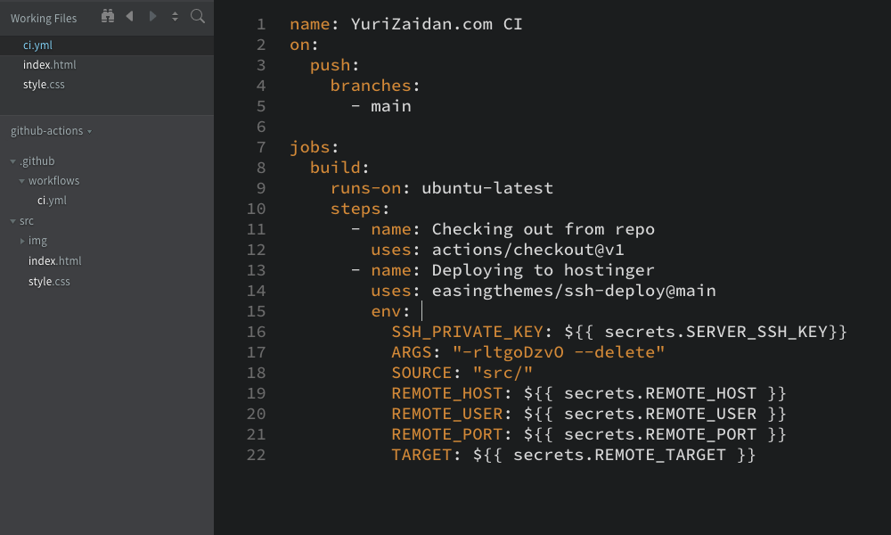

Esta página foi desenvolvida por Yuri Zaidan para a disciplina de Gerenciamento e Configuração de Software (2023/2), que é ministrada pelo docente Michael Móra no curso de Engenharia de Software da PUC-RS.
O que é o GitHub Actions?
O GitHub Actions é uma funcionalidade que permite construir automações no fluxo de trabalho de aplicações geridas pelo GitHub, fazendo com que o processo de integração, desenvolvimento e implantação de um software possa ocorrer de ponta a ponta, dentro do ambiente da ferramenta.
De forma sumária, a automação proposta pelo GitHub Actions consiste em um conjunto de tarefas sequenciais que são condicionadas a eventos pré-definidos em um determinado repositório, codificados através de um arquivo do tipo YAML (yet another markup language).
De forma geral, essas tarefas podem ser a execução de um script ou de um teste, envio de notificações, ou até a implantação de uma nova versão de um software em um ambiente produtivo.
Entendendo o conceito e aplicação de um workflow
Workflows são estruturas de comandos utilizadas para encadear ações baseadas em eventos-chaves ou calendários. Estas instruções são armazenadas em um arquivo do tipo YAML, que deverá ser armazenado no diretório '.github/workflows' .
Na prática, cada workflow possui um ou mais jobs, e cada job, consiste em um ou mais steps, pensados para a atender a um caso de uso específico - por exemplo, fazer o deploy de um script para um servidor. Vale lembrar que um step pode também ser uma action disponibilizada pela comunidade do GitHub ou terceiros.
Durante a criação de um workflow, é necessário que se defina um evento-chave ou calendário que, uma vez registrado, inicialize a execução do workflow, como por exemplo, quando um commit é realizado em uma branch específica, ou até através de um horário específico que foi determinado. Além de tudo isso, o GitHub permite que o gerenciamento dos workflows seja feito de forma rápida e intuitiva através de um editor visual para criar workflows, e também uma API para integração com outros serviços e ferramentas.
Quais os benefícios do GitHub Actions?
Simplificação para criar e gerir workflows
Integração nativa com o próprio GitHub
Biblioteca extensa de ações criadas pela comunidade
Suporte à diferentes plataformas e linguagens
Segurança e confiabilidade de um recurso do GitHub
Quais são os principais casos de uso para a utilização do GitHub Actions?
Pensado para CI/CD: é possível se beneficiar dos workflows para construir e testar software automaticamente, além de fazer o deploy deste código para ambientes de staging e produção.
Testes: uma forma de garantir que o teste é executado sempre antes de ser mesclado à branch principal é condicionar este evento a um fluxo de testes.
Notificações: através da dinâmica entre workflows e eventos-chaves, é possível notificar um time que eventos, como a falha de um teste, de forma programada e escalável.

Workflow criado para realizar o deploy desta página para o webhost.
Um exemplo prático com o GitHub Actions
Um exemplo de aplicação prática do GitHub Actions é a possibilidade de condicionar o processo de deploy de uma aplicação web para um webhost à um evento de push para a branch main do projeto.
Desta forma, quando todos os membros da equipe entendem que uma funcionalidade ou mais podem ser elevadas à general availability , e realizam o push para a branch principal, é possível relacionar este evento a uma sequência de ações que irão publicar a versão mais recente desta aplicação em sua respectiva hospedagem web.
Na imagem acima, é possível perceber que esta página possui um folder chamado src, onde estão armazenados a página index.html e o arquivo de estilização style.css. Além dele, um sub-folder chamado workflow (dentro do folder .github) possui um arquivo ci.yml, que será utilizado para compor a estrutura do workflow desta aplicação.
A primeira parte do arquivo do workflow definirá o evento-chave que será utilizado como gatilho para a execução dos jobs que serão inseridos a seguir. No caso deste exemplo, é definido que os jobs serão executados quando ocorrer uma ação de push para a branch main.
Após a definição do evento chave, é iniciado a descrição dos jobs e steps planejados para a automação esperada. Inicialmente, é definido que o job será inicializado em uma máquina linux, e o seu primeiro passo será operacionalizar o checkout do repositório da aplicação, através da action actions/checkoutv@1 . Após esta ação, o próximo passo é realizar o deploy com a versão mais recente da aplicada (enviada para a branch main) para o servidor de hospedagem (neste caso, a hostinger). Para este exemplo, foi utilizado um modo de acesso ao servidor web por meio de chaves SSH, com a action easingthemes/ssh-deploy@main.
Para que este acesso SSL ao servidor web possa ser autenticado, alguns parâmetros precisam ser adicionados nesta etapa:
1. 'SSH_PRIVATE__KEY': chave privada SSH; 2. 'SOURCE': diretório com arquivos a serem transferidos para o servidor web; 3.'REMOTE_HOST' : endereço de IP do servidor web; 4. 'REMOTE_USER': nome do usuário do servidor web; 5. REMOTE_PORT': porta do servidor, 6.'TARGET': diretório destino para onde serão transferidos os arquivos.
Vale lembrar que com exceção do valor referente ao parâmetro source, os demais precisam ser adicionados ao GitHub, através da funcionalidade Secrets, dentro das configurações do repositório da aplicação. E por fim, a chave pública SSH também precisa ser adicionada no servidor web utilizado para aplicação, já que as chaves SSH funcionam no modo chave pública e chave privada (sempre em pares), onde a conexão SFTP/SSH só é autorizada se a chave privada do usuário do computador cliente bater com a chave pública do usuário do servidor.